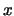
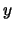
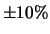

Next: CCD Reduction
Up: GCX User's Manual
Previous: Stars and Catalogs
Contents
Subsections
World coordinates are the ``real'' equatorial coordinates of objects
in catalogs: right ascension, declination and their epoch.5.1
Given an image frame, we reffer to the transformation between  and
 pixel coordinates and their world coordinate counterparts as the
World Coordinte System (WCS for short) of the frame.
The transformation between the spherical equatorial and the ``flat''
image coordinates cannot be done without choosing a projection
system. GCX uses the plane-tangent projection system, which is
appropiate for relatively narrow fields.5.2
In the plane-tangent system, the WCS is specified by the following
values:
- The frame coordinates of a reference pixel in the image (usually
the center of the frame) in the CRPIX1
and CRPIX2 fits header fields;
- The world coordinates (r.a. and dec) of the reference pixel in
the CRVAL1 and CRVAL2 fields;
- The epoch of the coordinates in the EQUINOX header
field;
- The horisontal and vertical scale of the image in degrees per
pixel in the CDELT1 and CDELT2 fields;
- The rotation of the frame in the CROTA1 field.
A slightly different form of these parameters is presented in the
WCS editing dialog: the scale parameters are expressed in the more
friendly arc seconds per pixel units, and the coordinates are
expressed in the HMS and DMS formats.
A given frame's WCS can be in one of the following states:
- Unset
- When the WCS is unset, the program has no idea about the
WCS. It will refuse to do any operation that requires the WCS.
- Initial
- An initial WCS is an approximate set of values for the
WCS parameters. It enables the program to load catalog stars and
display them on the image (more or less around their true
positions). It also provides a starting point for WCS fitting. GCX
will not use an initial WCS for any operation that requires precise
coordinates (like aperture photometry).
- Fitted
- The WCS has been
successfully fitted, but the quality of the fit was not enough
to allow it to be validated. A fitted WCS is treated very much like
an initial WCS.
- Valid
- If a fit was good enough (enough stars were fitted, and
the error was low enough), the WCS is deemed valid. All
operations that use the WCS are enabled in this situation.
When a frame is loaded, the WCS is initially unset. The header of the
frame is searched for information about the initial WCS. The following
fields are searched, in order:5.3
- CRVAL1/2, CDELT1/2, CROTA1, CRPIX1/2, EQUINOX. The bare
minimum set consists ofCRVAL1, CRVAL2 and one of the CDELTs.
- RA or OBJCTRA, DEC or OBJCTDEC, PIXSCALE or SECPIX. If neither of the scale fields is found,
a default scale values is taken from Wcs Fitting
Options/Default image scale;
- OBJECT If this field is present, the object's name is
searched in the catalog, and its coordinates used. The image scale
is set from Wcs Fitting Options/Default image scale;
When neither of the above fields are found, the WCS is left in the
unset state. An initial WCS can be set in this case by either
entering the parameters in
the WCS edit dialog (Wcs/Edit Wcs), loading a catalog object
using Stars/Add From Catalog or loading a recipy file that
has the target object or field center specified. In the last two cases, the default
scale is used.
By WCS fitting we understand the process of comparing the
positions of stars extracted from the image frame versus the projected
positions of catalog stars, and the subsequent adjustment of the WCS
for the best match.
The fitting process consists of the following steps:
- Detecting frame stars. This step is described in section
4.1;
- Obtaining catalog stars for the match. These can come from
either a recipy file or one of the field stars catalogs. The program
will load stars from the Tycho2 and GSC catalogs. All the stars from
a loaded recipy file that have the ``astrimetric'' flag set will
also be used for WCS fitting;
- Finding star pairs. This step tries to find similar asterism in
the detected and catalog sets and match the corresponding stars.
The algorithm tolerates frame rotation and changes in scale. If some
bounds can be placed on initial errors (for instance if we know that
only a limited rotation range is expected) it is possible to pass
that information to the algorithm in order to narrow the search.
- Fitting the solution. This is an iterative step consisting of
calculating the required offset, scale and rotation in the frame
coordinates, then adjusting the WCS accordingly. After that, the
image coordinates of the catalog stars are recalculated and the step
repeated until there is no significant change in the WCS. The
iterative approach is necessary because the projection operation is
non-linear. At the end of the fitting step, a rms position
error is calculated, and compared to the value of the Max error
for WCS validation. If the error is lower and enough pairs have
been used in the fit (more than Min pars for WCS validation),
the WCS is marked ``valid''.
The Scale tolerance option sets the maximum initial error of the
image scale for the pairing alogorithm. A value of 0.1 specifies that
the scale of the initial WCS has an error of at most . The
Rotation tolerance specifies how much field rotation is expected
by the pairs matching algorithm. A value of 180 will let the algorithm
match frames of any rotation. A third important parameter is
Minimum number of pairs. This specifies the number of pairs at
which the algorithm decides it has found a match. The default values
for these parameters almost never generate a bad match, even for quite
dense fields. If one increases the scale tolerance, there is an
increased risk of having a bad match, and the minimum pairs should be
increased as well.
The pairing algorithm requires the initial WCS to have the correct
mirroring. When the initial WCS's scale comes from the CDELT1/2
fields, their signs will determine the mirroring: when both have the
same sign, the frame is ``normal'', i.e. W is to the right when N is
up. If the signs are different, the field is flipped.
When the initial WCS's scale comes from a single scale parameter, the
mirroring will be set by the program according to the value of the
General Observation Setup Data/Flipped field option.
The WCS fitting steps can be performed one at a time, or all together.
The Wcs/Auto Wcs operation will do the following steps:
Stars/Detect sources, File/Load Field Stars/From Tycho2
Catalog, Wcs/Auto pairs, Wcs/Fit Wcs from pairs.
The Wcs/Quiet Auto Wcs variant will also delete the detected and
field stars at the end of the fit.
Selecting Wcs/Reload from frame will revert the WCS to the
parameters before the fit. The pairs will remain marked.
In the unlikely event that the pairing algorithm fails,5.4 it is possible to create pairs ``by hand''. Select a detected star,
then right-click on the catalog star you want to pair it with and
select Create Pair from the pop-up menu. When at least 2 pairs
have been marked, we can fit the wcs with Wcs/Fit Wcs from
Pairs. Note that the fit will not be marked as
``valid'' unless at least
Minimum number of pairs have been marked.
Next: CCD Reduction
Up: GCX User's Manual
Previous: Stars and Catalogs
Contents
Radu Corlan
2004-12-07